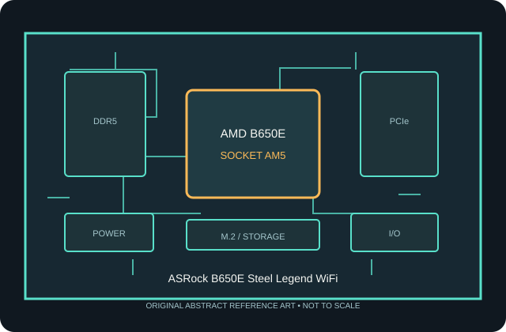

[ INDIVIDUAL COMPONENT // MOTHERBOARDS ]
ASRock B650E Steel Legend WiFi
AMD B650E Socket AM5 retail motherboard, 2023. This record describes only the named model; confirm the printed model, revision and firmware on the physical board.

MODEL / REVISION WARNING: Similar names, Wi-Fi variants and PCB revisions can differ in wireless hardware, connectors, lane routing and firmware. Identify the exact model and revision before installation or BIOS updates.
Specifications
| Model / chipset | ASRock B650E Steel Legend WiFi — AMD B650E, 2023 |
|---|---|
| Socket / processor compatibility | Socket AM5; supports compatible Ryzen 7000, 8000G and 9000 desktop processors only where listed for this exact model and installed BIOS. Integrated graphics output depends on CPU. |
| Memory | Four DDR5 DIMM sockets in dual-channel configuration; AMD EXPO profiles are memory overclocking, with achievable rate and capacity dependent on CPU, BIOS and the populated DIMMs. Consult ASRock's qualified-vendor list. |
| Form factor | ATX (305 × 244 mm) |
| PCI Express expansion | Primary CPU-connected x16 slot supports PCIe 5.0; a second x16-length slot and an x1 slot provide additional PCIe expansion at their documented electrical widths. Verify lane sharing in the manual. |
| Storage | Four M.2 sockets, including CPU-connected PCIe 5.0 x4 storage and PCIe 4.0 sockets, plus four SATA 6 Gb/s ports. M.2 type, socket length and SATA/PCIe sharing vary by connector. |
| Rear I/O | Rear USB Type-C and Type-A ports at USB 3.2 Gen 2x2/Gen 2/Gen 1 and USB 2.0 speeds; HDMI and DisplayPort outputs; 2.5GbE, Wi-Fi 6E antenna connectors, audio jacks and BIOS Flashback facilities. |
| Networking / audio | 2.5Gb Ethernet and integrated Wi-Fi 6E / Bluetooth (regional radio certification applies); onboard multichannel audio. |
| Firmware / compatibility | UEFI support, CPU list and minimum BIOS are model-specific. AM5 uses DDR5 only. Match the case to the stated board dimensions, use the correct EPS/ATX power leads, install the AM5 cooler with its supported mounting hardware, and check the manual's lane-sharing/connector tables before populating M.2 and PCIe devices. |
Compatibility notes
AM5 processors are not interchangeable with AM4 CPUs. Consult the manufacturer's CPU support list for the exact board and verify the required BIOS before purchasing or installing a processor. A BIOS flash utility does not make an unlisted CPU compatible.
DDR5 EXPO profiles are memory overclocking; stability, capacity and transfer rate depend on the CPU memory controller, DIMM type/population, firmware and the board's validated memory list. Storage protocols, expansion-slot widths, graphics lane reduction, SATA disablement and USB functionality depend on the connector and lane-sharing rules described in the current manual.
Confirm the physical dimensions and standoff layout against the chassis, install only the correct AM5 cooler hardware, connect required CPU power leads, and use the supplied Wi-Fi antenna where fitted. Firmware updates must match this exact model/revision and follow the manufacturer's procedure.
Preservation and handling
AM5 is an LGA socket: protect its exposed contacts from handling damage and contamination. Before installation, inspect the socket, DIMM slots, M.2 thermal pads, rear-I/O shield and power connectors. Record PCB revision, serial/date codes and BIOS version; retain the original packaging and document test conditions and any repairs.
Manufacturer sources
- ASRock B650E Steel Legend WiFi — product specifications and manualManufacturer-provided model reference; use this resource to confirm specifications and model-specific support.
- ASRock B650E Steel Legend WiFi — support, CPU list and BIOSManufacturer-provided model reference; use this resource to confirm specifications and model-specific support.
Static summary for identification; manufacturer's documentation is authoritative. Confirm current CPU support, BIOS, memory population and resource sharing for the exact physical board.